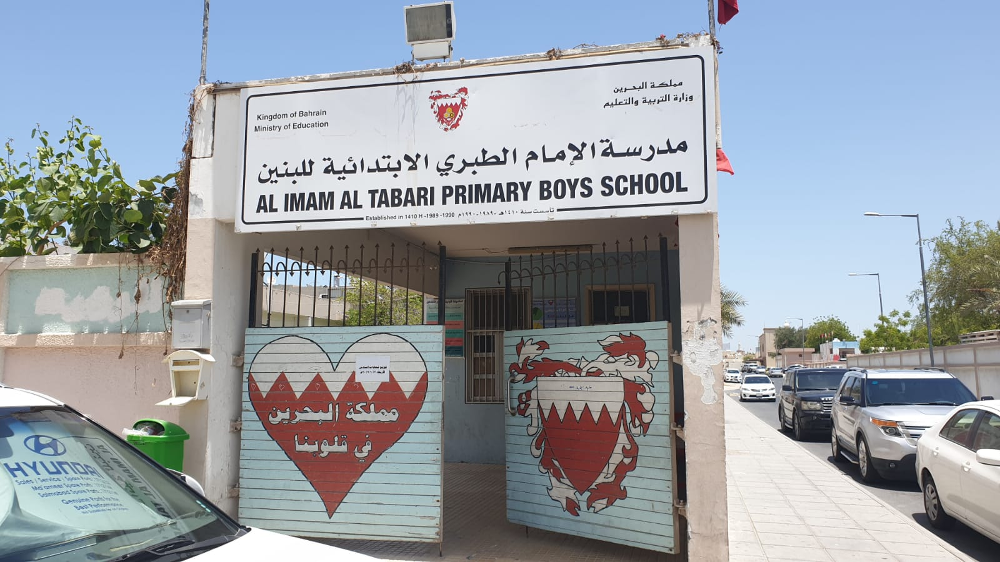
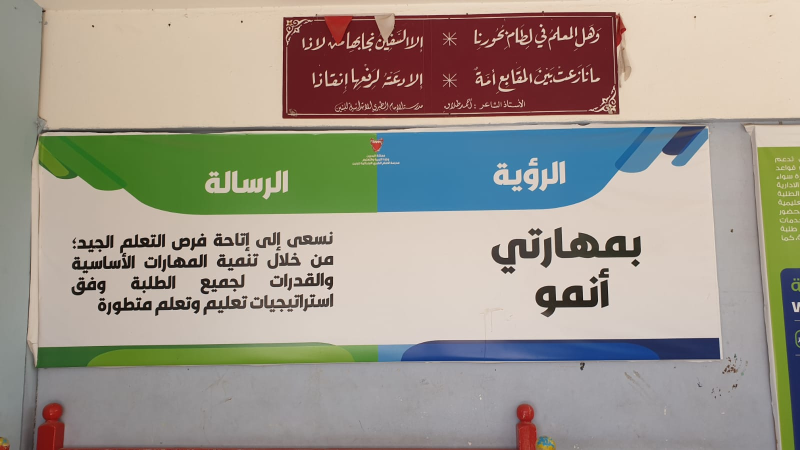
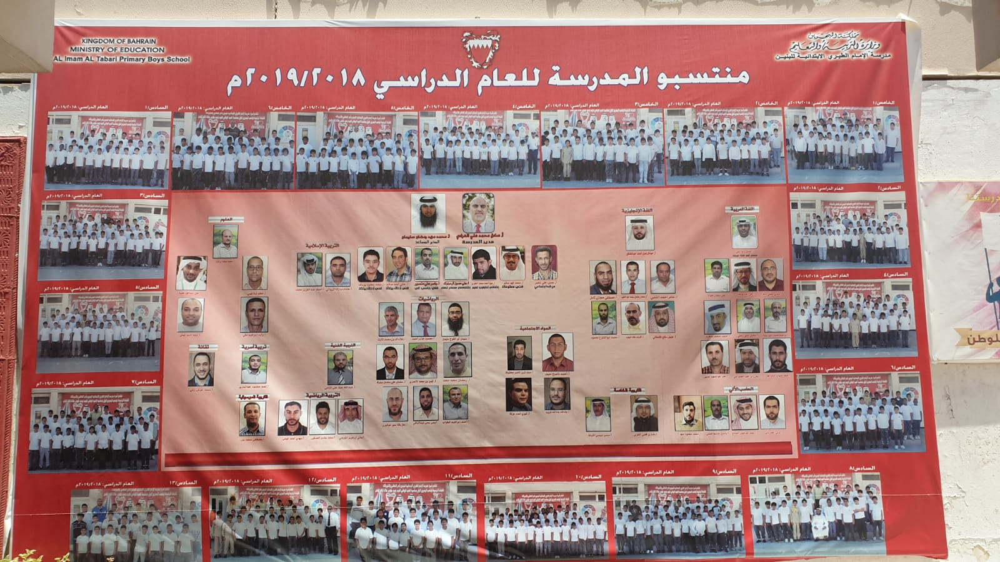
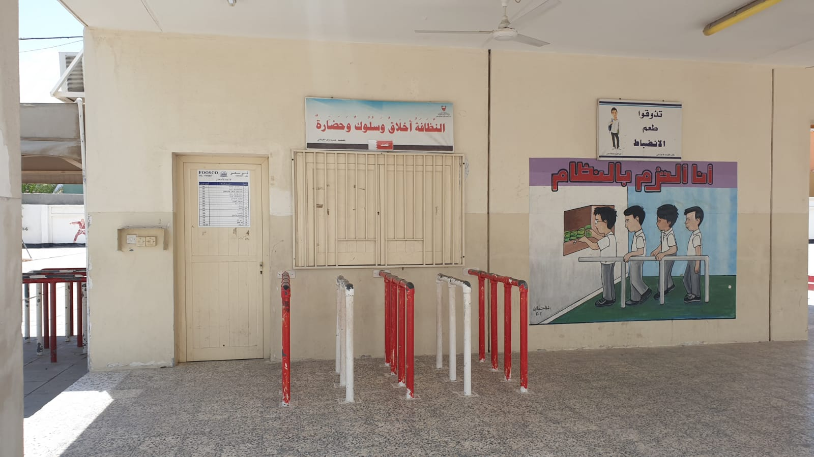
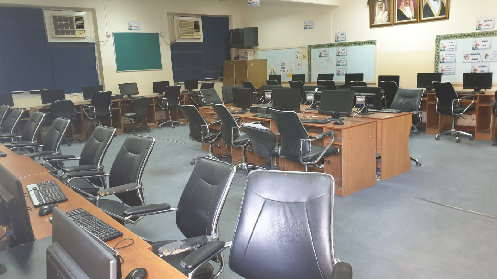
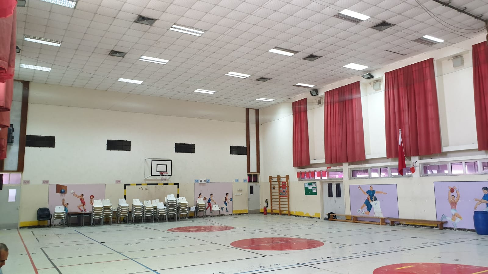
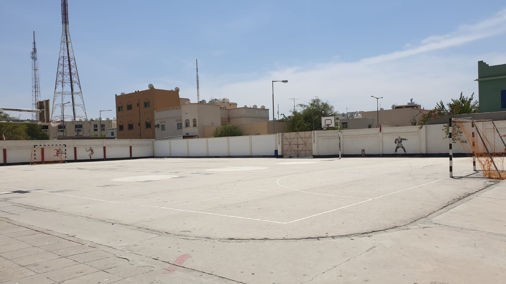

School Enterance
Main Enterance

Vission & Mission
The vission and Mission of the school

Staff
Managment and teachers structure

Food court
School food court

Computer Lab
Computer lab for the informatin technomlogy courses

School hall
The school indoor mutlti purpose activites hall

Football Field
The school football field